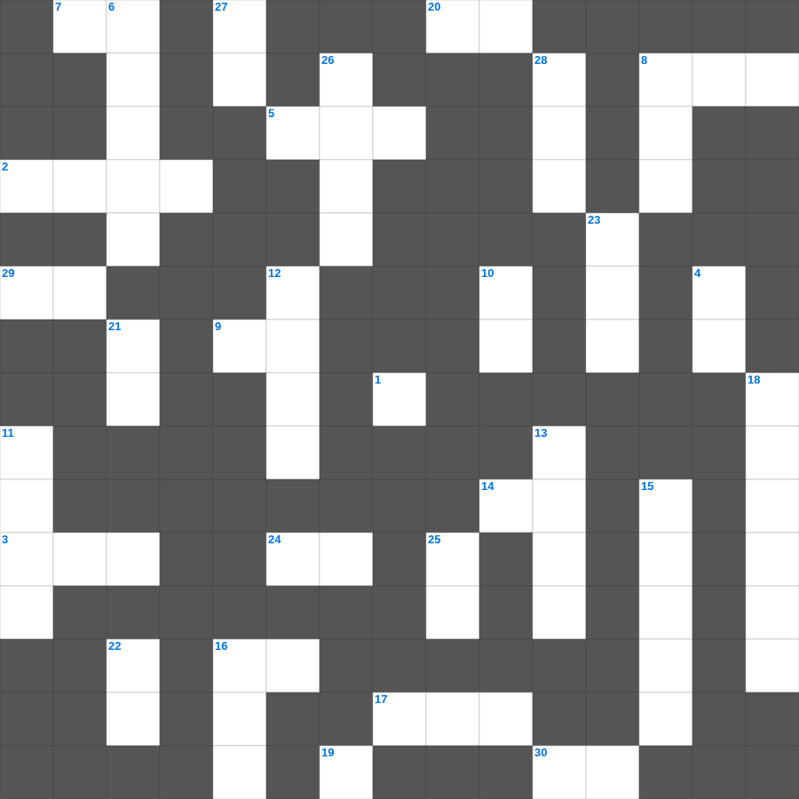

베드로전서 마스터 100
📌 서비스 정의
십자가로세로는 교회 주보와 주일학교에서 사용할 수 있는 성경 기반 가로세로 퍼즐 서비스입니다. 성경 인물, 사건, 핵심 구절을 바탕으로 제작되었습니다. 온라인 풀이 및 인쇄 기능을 제공합니다.
📖 베드로전서란?
베드로전서는 고난과 핍박 속에 있는 그리스도인들에게 거룩한 삶과 소망, 그리고 그리스도의 본을 따르는 인내를 권면하는 서신입니다.
📚 베드로전서의 주요 사건·주제
거룩한 백성으로서의 부르심 · 고난 중의 그리스도인의 자세 · 그리스도의 본을 따른 인내 · 가정과 사회에서의 그리스도인의 삶 · 교회 지도자들을 향한 권면
오늘은 베드로전서의 주요 내용을 담은 베드로전서 말씀 퀴즈를 준비했습니다. 총 35개의 힌트가 있으며, 주일학교 교재나 성경공부 자료로 활용하기 좋습니다. 무료로 즐기는 베드로전서 가로세로 퍼즐을 지금 바로 풀어보세요!

📝 가로 힌트
1. 나의 자녀들아 내가 이것을 너희에게 씀은 너희로 죄를 이것하지 않게 하려 함이라
2. 드보라 사사가 재판하던 나무
3. 홍수 때 비가 내린 기간
5. 벨사살 왕을 죽이고 나라를 얻은 메대 사람
7. 홍해를 건넌 후 미리암이 잡고 춤추며 노래한 악기
8. 요셉의 형제 중 그를 죽이지 말자고 제안한 장남
9. 느헤미야가 밤에도 옷을 벗지 않고 곁에 둔 것
14. 여호와께서 이와 같이 말씀하시니라 바벨론에서 이것 년이 차면 내가 너희를 돌보고
14. 다니엘이 책을 통해 여호와께서 말씀하신 그 연수가 이것 년 만에 그치리라는 것을 깨달았으니
15. 요셉이 형들을 용서하며 한 말 '하나님이 이것을 선으로 바꾸사'
16. 야곱의 첫 번째 아내(언니)
17. 비가 그친 후 노아가 처음 보낸 새
19. 지혜의 그늘 아래에 있음은 이것의 그늘 아래에 있음과 같으나
20. 애굽에 내려간 백성들이 하늘의 이것에게 분향하며 우상 숭배를 계속하였더라
24. 출애굽을 이끈 이스라엘의 지도자
29. 바로의 꿈을 해석한 요셉의 나이
30. 혹시 그들이 넘어지면 하나가 그 이것을 붙들어 일으키려니와
📝 세로 힌트
3. 사람을 경책하는 자는 혀로 아첨하는 자보다 나중에 더욱 이것을 받느니라
4. 하나님을 경외하는 것이 이것의 근본
6. 노아의 방주가 만들어진 재료
8. 반석을 쳐서 물을 낸 장소
10. 히스기야가 기도로 병 고침 받은 후 교만했다가 다시 행한 것
11. 성령님이 우리 곁에서 돕는 분이라는 뜻
12. 주님 가르쳐 주신 기도
13. 이스라엘이 광야에서 진을 쳤던 장소들을 기록한 장
15. 다리오 왕이 고레스의 조서를 발견한 곳
16. 솔로몬이 성전 건축을 위해 백향목을 가져온 곳
18. 무화과나무가 마른 이유
21. 성령의 열매: 충성, 온유, 이것
22. 아브라함이 100세에 얻은 아들
23. 성전 건축을 방해하기 위해 뇌물을 준 사람들
25. 에서와 야곱 중 형의 이름
26. 솔로몬이 성전을 건축하기 시작한 산
27. 여호와는 의로우시도다 그러나 내가 그의 명령을 이것 하였도다
28. 아달랴의 칼날을 피해 살아남아 7세에 왕이 된 자
🧩 이 퍼즐에서 배우는 내용
이 퍼즐은 베드로전서 마스터 100의 핵심 단어와 개념을 자연스럽게 복습할 수 있도록 구성되었습니다. 주일학교 수업이나 개인 성경공부에서 학습 내용을 점검하는 용도로 바로 활용할 수 있습니다.
🧑🏫 교회 교육 자료 활용
이 퍼즐은 주일학교 교재 추천 자료로 활용할 수 있고, 주일학교 주보에 넣기 좋은 분량으로 구성되어 있습니다. 수업용 주일학교 교안에 활동지로 붙이거나, 예배 후 복습용 주일학교 공과교재로 바로 사용할 수 있습니다.
🏷️ 키워드
베드로전서 말씀 퀴즈, 베드로전서, 십자가로세로, 성경퀴즈, 말씀퀴즈, 가로세로퍼즐, 주일학교 교재 추천, 주일학교 주보, 주일학교 교안, 주일학교 공과교재